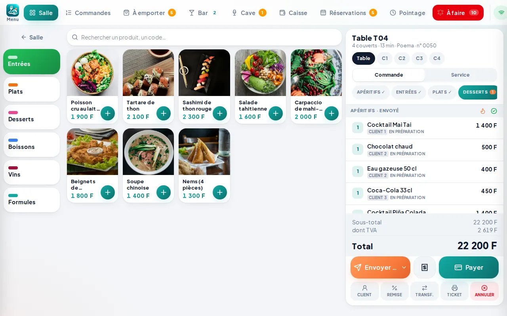
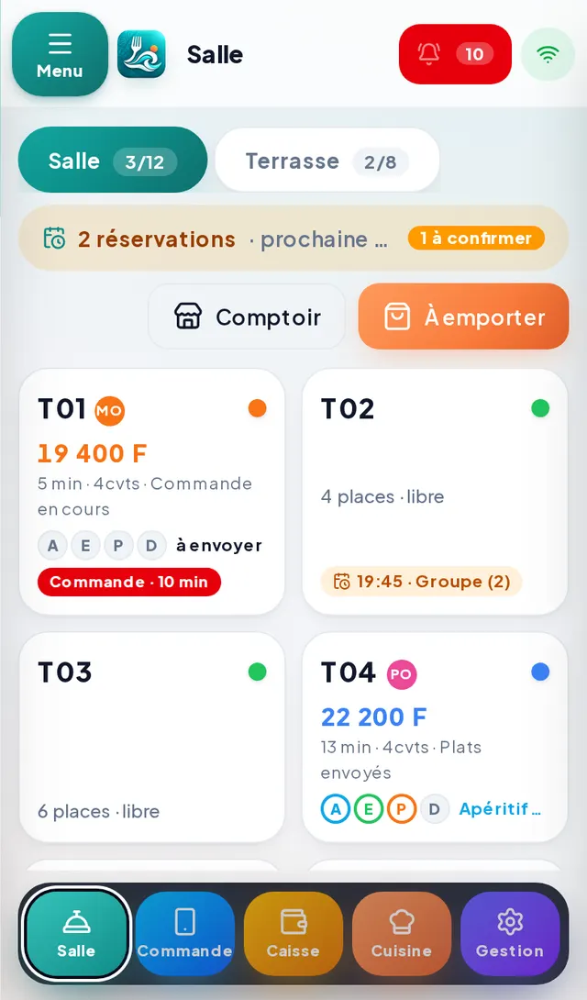
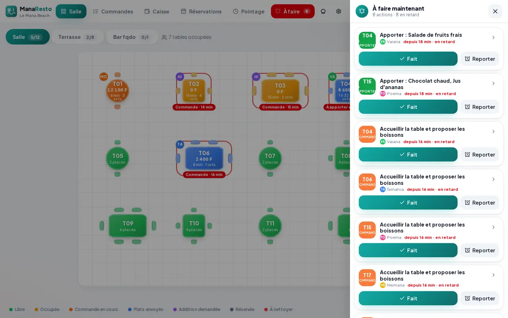
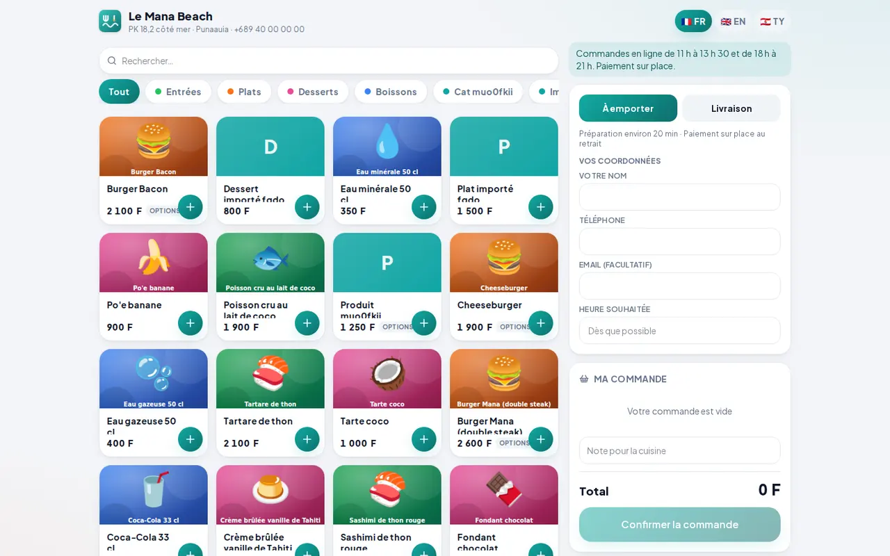
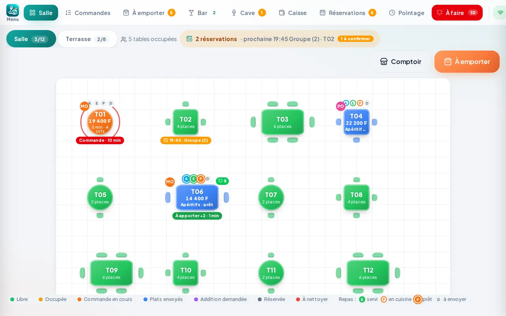
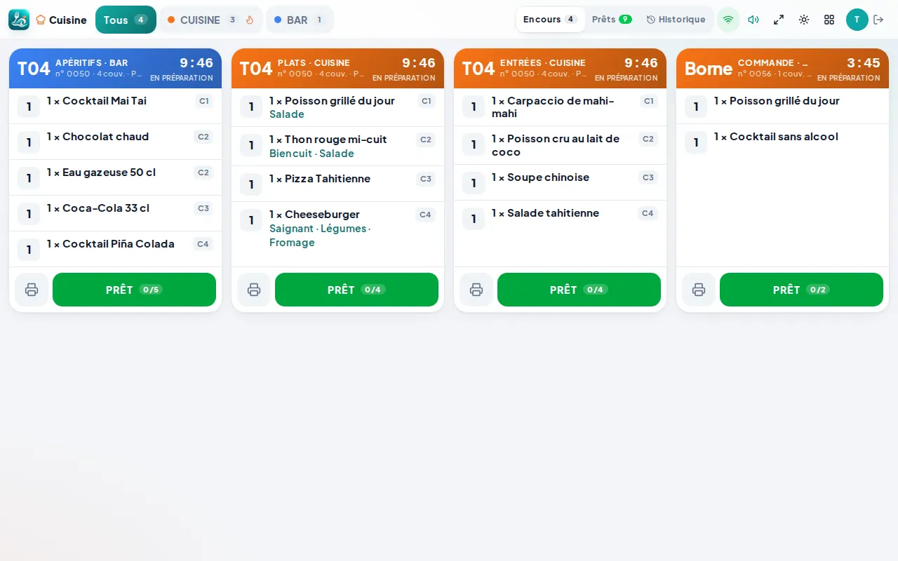
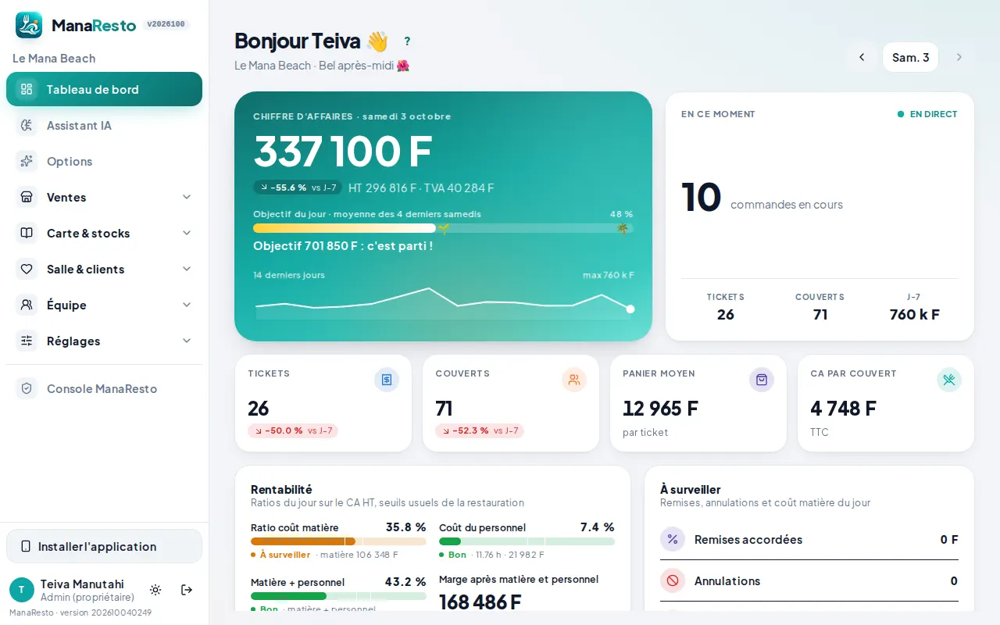
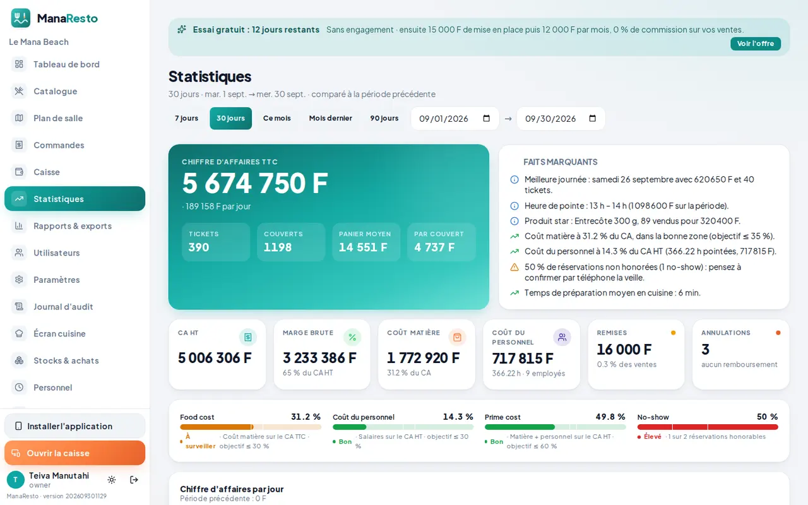

Toute la gestion de votre restaurant dans une seule application
ManaResto réunit votre caisse, votre salle, votre cuisine, vos stocks, votre équipe et vos commandes en ligne dans un logiciel de caisse et de gestion pensé pour les restaurants, roulottes, snacks et bars de Polynésie française.
12 000 F CFP/ mois
0 % de commission15 jours gratuitsSans carte bancaire
Fonctionne sur tablette, ordinateur et smartphone · Caisse • Salle • Cuisine • Stock • Personnel • Commandes • Livraison • Réservations


- 0 % de commissionGardez l'intégralité de vos ventes en ligne.
- 12 000 F CFP/moisUn tarif simple et prévisible.
- Conçu à TahitiUne solution adaptée aux réalités de la Polynésie.
- Multi-appareilsTablette, ordinateur et smartphone.
Tout votre restaurant. Un seul logiciel.
Plus besoin de multiplier les applications. ManaResto centralise les opérations essentielles de votre établissement, de la caisse à la commande en ligne.
Caisse
Prise de commande rapide, encaissement et suivi des ventes.
Plan de salle
Visualisez vos tables et l'état du service en temps réel.
Cuisine
Les commandes arrivent directement en cuisine et leur avancement est visible par l'équipe.
Stocks
Suivez vos produits et anticipez les ruptures.
Personnel
Organisation de l'équipe et suivi de l'activité.
Commande en ligne
Recevez directement les commandes de vos clients sans commission.
Livraison et retrait
Gérez sur place, à emporter et livraison depuis la même interface.
Réservations
Centralisez vos réservations et l'organisation de votre salle.
Fidélité
Développez la relation avec vos clients.
QR Code
Permettez aux clients d'accéder facilement aux services du restaurant.
Vos serveurs savent toujours quelle table nécessite leur attention
ManaResto accompagne l'équipe pendant tout le repas et aide à éviter les tables oubliées.
- InstallationLa table est ouverte.
- Prise de commandeManaResto rappelle au serveur si la commande tarde à être prise.
- Boissons / apéritifLe serveur visualise les actions à effectuer.
- Plat prêtLa table passe en statut « À apporter ».
- Contrôle de satisfactionAprès le service, ManaResto peut rappeler au serveur de vérifier que tout se passe bien.
- Dessert / caféUn rappel évite d'oublier de revenir à la table.
- AdditionLe serveur voit immédiatement qu'une table attend son règlement.
Même pendant un gros service, chaque table reste visible et suivie.

Vos commandes en ligne. Vos clients. Votre chiffre d'affaires.
Permettez à vos clients de commander directement auprès de votre établissement sans reverser de commission sur chaque commande.
0 %de commission
- commande à emporter ;
- livraison si disponible (communes, frais et minimum de commande) ;
- QR Code à table ;
- menu digital en français, anglais et reo tahiti ;
- réception des commandes directement dans ManaResto.

Les écrans ManaResto, tels qu'ils sont.
Des captures réelles du logiciel : plan de salle, caisse, cuisine, commandes et tableau de bord.




Pensé à Tahiti pour les professionnels du fenua
ManaResto a été conçu pour répondre aux besoins des restaurants, roulottes, snacks et bars de Polynésie française.
Prix en F CFP
Tickets, rapports et exports en francs Pacifique, sans décimales inutiles.
TVA locale lorsque applicable
Taux configurables par produit, N° Tahiti et mentions sur vos tickets.
Adapté aux établissements polynésiens
Terrasses, roulottes, coupures de réseau : la caisse continue et se synchronise au retour d'Internet.
Accompagnement local
Une équipe basée à Tahiti, joignable par e-mail, qui parle votre langue et connaît vos horaires.
Vos équipements courants
Tablettes, téléphones et ordinateurs que vous avez déjà, sans matériel imposé.
Site web pour votre restaurant
Une page publique à votre nom avec votre menu, vos horaires et vos boutons commander et réserver.
Utilisez le matériel que vous avez déjà
ManaResto fonctionne depuis un navigateur moderne et s'adapte à vos différents écrans. Il peut être installé comme une application sur les appareils compatibles.
Commencez simplement
Créez votre compte
Lancez votre essai ManaResto : 15 jours gratuits, sans carte bancaire.
Configurez votre établissement
Ajoutez votre carte, vos tables et votre équipe.
Commencez votre service
Utilisez ManaResto depuis votre tablette, ordinateur ou smartphone.
Les restaurateurs du fenua choisissent ManaResto
Un tarif simple, tout inclus, zéro commission.
Une seule formule pour tous les établissements : restaurant, roulotte, snack, bar ou café. Pas de module payant, pas de limite d'appareils ni d'utilisateurs, pas de pourcentage prélevé sur vos ventes.
Vous préférez voir ManaResto en fonctionnement ?
ManaResto
12 000 F CFP/ mois
Engagement 12 mois
- Caisse
- Plan de salle
- Cuisine
- Gestion des stocks
- Gestion du personnel
- Commande en ligne
- 0 % de commission
- QR Code
- Réservations
- Utilisation multi-appareils
- Mises à jour incluses
- Support par e-mail
Ce que les restaurateurs nous demandent
Combien coûte ManaResto ?
ManaResto coûte 12 000 F CFP par mois avec un engagement de 12 mois.
Y a-t-il une commission sur les commandes en ligne ?
Non. ManaResto ne prélève aucune commission sur le montant de vos commandes en ligne.
Puis-je essayer ManaResto avant de m'abonner ?
Oui. Vous disposez de 15 jours d'essai gratuit et aucune carte bancaire n'est nécessaire pour commencer.
Sur quels appareils fonctionne ManaResto ?
ManaResto peut être utilisé sur tablette, ordinateur et smartphone compatibles, depuis un navigateur moderne. Il peut être installé comme une application sur l'écran d'accueil.
ManaResto est-il adapté aux roulottes ?
Oui. ManaResto est adapté aux restaurants, roulottes, snacks, bars et autres établissements de restauration.
ManaResto est-il développé en Polynésie ?
Oui. ManaResto est conçu et développé à Tahiti pour les professionnels de Polynésie française.
Puis-je demander une démonstration ?
Oui. Vous pouvez demander une présentation de ManaResto avant de commencer votre essai, via le formulaire ci-dessous.
ManaResto fonctionne-t-il sans Internet ?
Oui. La caisse continue de fonctionner en cas de coupure (prise de commande, envoi en cuisine) et se synchronise automatiquement au retour de la connexion.
Demander une démonstration
Nous vous présentons ManaResto sur vos propres cas : votre carte, votre salle, votre organisation. Sans engagement de votre part.
Vous pouvez aussi nous écrire : contact@manaresto.com ou nous appeler au .
Prêt à simplifier la gestion de votre restaurant ?
Découvrez ManaResto gratuitement pendant 15 jours.
12 000 F CFP/mois• 0 % de commission